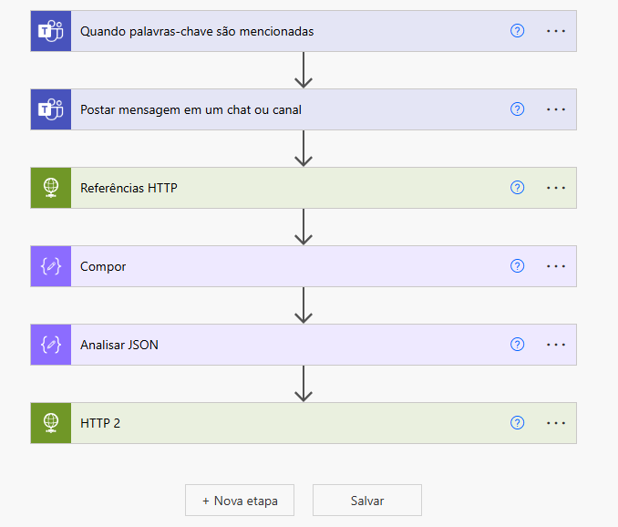
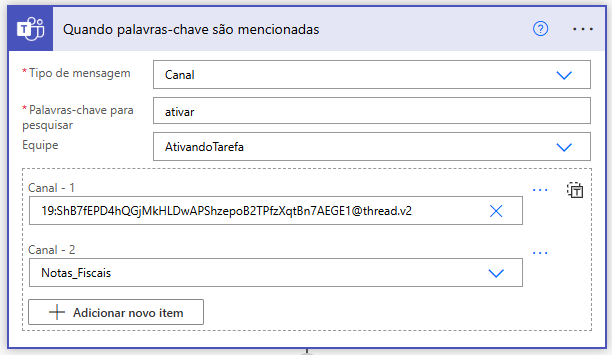

Com vários processos sendo criado e alguns usando gatilhos para execução do bot foi necessário centralizar as informações em um único local para gerenciar a execução dos bots.
Para o desenvolvimento do bot de agendamento utilizando o Power Automate, adotei uma série de conectores e recursos estratégicos que permitiram a criação de um fluxo automatizado e eficiente para monitorar e responder a eventos específicos. O objetivo central foi construir um fluxo que pudesse monitorar menções a palavras-chave em um grupo de colaboradores no Microsoft Teams, executar o bot, e notificar adequadamente os usuários, mantendo a fluidez da comunicação e a integridade dos dados em todas as etapas.
Como vemos abaixo temos a foto do corpo do processo em criado blocos, cada bloco é um conector que realiza uma ação:

A configuração do conector “Quando palavras-chave são mencionadas” foi a base do fluxo. Esse conector permite que o bot monitore em tempo real a presença de termos específicos em conversas ou canais. A vantagem técnica dessa abordagem é que ela proporciona uma automação reativa, ou seja, o bot só é acionado em momentos relevantes, otimizando o uso de recursos e evitando execuções desnecessárias.

Em Canal – 1, temos um ID de teste apenas para exemplificar
Uma vez detectada a palavra-chave, o conector “Postar mensagem em um chat ou canal” entra em ação, enviando uma notificação automática com base no contexto da menção, mantendo todos os participantes do canal informados. Essa notificação não apenas agiliza a comunicação, mas também elimina a necessidade de intervenções manuais, contribuindo para a escalabilidade do fluxo.
A inclusão de “Referências HTTP” foi essencial para permitir que o bot interagisse com APIs externas. Utilizando esse conector, implementei requisições para obter informações adicionais de sistemas externos quando necessário, enriquecendo os dados processados. Para maximizar a versatilidade desse processo,
Utilizei o conector “Compor”, que atua como um contêiner temporário para armazenar valores intermediários e simplificar o fluxo, promovendo uma leitura mais clara e uma lógica de execução organizada.
A seguir, a etapa de **Analisar JSON** foi usada para converter as respostas de APIs em dados estruturados. Esse conector permite que o fluxo extraia valores específicos de um retorno JSON, viabilizando o uso de dados complexos dentro do fluxo de trabalho.
A combinação do conector **HTTP 2** com o **Analisar JSON** aumentou a eficiência na manipulação e organização dos dados, permitindo que eu segmentasse informações em campos específicos para posterior uso nas mensagens de retorno.
Em Canal – 1, temos um ID de teste apenas para exemplificar
O Power Automate apresenta uma plataforma robusta para gerenciar esses fluxos e executar os bots de forma integrada, tornando o processo não apenas mais automatizado, mas também mais controlado.